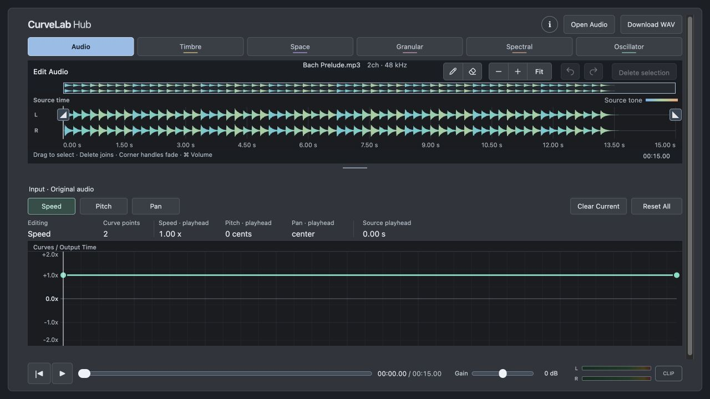

Space Timer
In preparation
A shared view of measures and beats for rehearsals and performances.
A Mac host and performer displays for iPhone and iPad. Two free companion apps, currently in preparation.
Small tools for music and performance.
In preparation
A shared view of measures and beats for rehearsals and performances.
A Mac host and performer displays for iPhone and iPad. Two free companion apps, currently in preparation.
